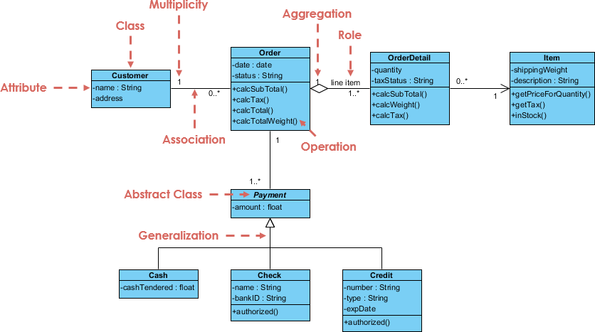

Object Oriented Programming in C#

Instructor: Chris Fulton
Learning Agenda
- Understanding Object Oriented Principles
- What is OOP?
- Terminology - Polymorphism, Encapsulation, Instantiation, Abstraction, Inheritance
- Classes and Struct - Class Structure and Breakdown
- Getters Setters | Auto Implemented Properties | Constructors | ToString Method | Working Methods
- Constructor and Object Initializer
- Structs | Partial Classes
- Inheritance
- Understanding Inheritance
- UML Modeling | UML Diagrams
- Base Class | Child Classes | Abstract Classes | Interfaces | Virtual & Override keywords
- Dependency Injection
- Generic's and Collections
- Understanding collections and generics in c#
- Strongly Typed vs. Loosely Typed
- Systems.Collections.Generic namespace
- List<T>class | Stacks<T> class | Queues<T>class | Dictionary<Tkey, Tvalue> class
What is OOP?
A way of organizing your code to focus on real world nouns (Person, place, thing or idea)
What is OOP?
Terminology
Encapsulation
enables a group of properties, methods and other members to be considered a single unit or object.
Encapsulation provides a way to protect data from accidental corruption.
Instantiation
is used to create an object from a class (instantiate).
Composition
Using an object within another object - defines a has-a-relationship
Abstraction
can be achieved using abstract classes in C#. C# allows you to create abstract classes that are used to provide a partial class implementation of an interface.
Polymorphism
the ability of objects of different types to provide a unique interface for different implementations of methods. It is usually used in the context of late binding, where the behavior of an object to respond to a call to its method members is determined based on object type at run time.
Inheritance
allows you to define a child class that reuses (inherits), extends, or modifies the behavior of a parent class. The class whose members are inherited is called the base class. The class that inherits the members of the base class is called the derived class.
Abstraction

Creating a simple model of a more complex thing, which represents its most important aspects in a way that is easy to work with for our program's purposes
Class Structure and Break-down
- When you create a class, you define both its attributes and its methods.
- The attributes hold data for each object instance.
- the methods are verbs that take action against the data for each instance.
class Person
{
private string name;
private int age;
private string gender;
private string interest;
public void bio()
{
Console.WriteLine($"{name} is {age} years old. They like {interest}");
}
public void Greeting()
{
Console.WriteLine($"Hi! I'm {name}");
}
}
Data Encapsulation
GETTERS/SETTERS
old and new way
AUTO IMPLEMENTED PROPERTIES
Only methods from within the class can get and set data. Auto-Implemented properties is c# syntactical sugar. You can create a public data field when you want all objects of a class to contain the same value
Getter and Setters
- Getter and Setter's - Accessor Methods
- A get property accessor is used to return the property value, and a set accessor is used to assign a new value. Something called Implementation Hiding
- The
valuekeyword is used to define the value being assigned by the set accessor.
class Person
{
private string name;
private int age;
private string gender;
private string interest;
public string Name
{
get
{
return name;
}
set
{
name = value;
}
}
public int Age
{
get
{
return age;
}
set
{
age = value;
}
}
public string Gender
{
get
{
return gender;
}
set
{
gender = value;
}
}
public string Interest
{
get
{
return interest;
}
set
{
interest = value;
}
}
public void bio()
{
Console.WriteLine($"{Name} is {Age} years old. They like {Interest}");
}
public void Greeting()
{
Console.WriteLine($"Hi! I'm {Name}");
}
}
AUTO IMPLEMENTED PROPERTIES
- Auto Implemented Properites - Fast Implementation
- The implementation is created for you automatically. You cannot use auto-implemented property if you need to include customized statements within one of your accessors.
- The cooresponding backing field is generated by the compiler and has an internal name that would not match the field's name if you code it yourself.
- When a property only has a 'get' you should use a readonly access modifier
class Person
{
public string Interest { get; set; }
public string Gender { get; set; }
public int Age { get; set; }
public string Name { get; set; }
public void bio()
{
Console.WriteLine($"{Name} is {Age} years old. They like {Interest}");
}
public void Greeting()
{
Console.WriteLine($"Hi! I'm {Name}");
}
}
Class and Object Relation
- A class is a blueprint of an object.
- Once we have a blueprint, we can create multiple instances. When you create an object, you call its constructor.
- All Classes inherit from System.Object.
Instantiation

This process of creating an object instance from a class is called instantiation — the object instance is instantiated from the class
Sample Problem Walk through
- MPLS Renters
- Construct an console application that allows a prospective renter to search for Luxury apartments downtown and add apartments to thier profile.
- The data you may wish to collect for an apartment includes name, address, floor count, region of city estimated rent for 1 bedroom, 2- bedroom and 3 - bedroom
- The data you may wish to collect for a prospective renter includes name, email, move-in date, preferred region of city, preferred number of bedrooms and baths.
Constructors
- All class definitions contain at least one constructor
- A class definition can include several constructor methods with parameters, known as nondefault constructors
- In C#, constructors are called using the new keyword. And can be overloaded as seen below
- Destructors
- are used to clean up after objects. In general, you don't have to provide code for a destructor method; instead the default operation does the work for you.
class Person
{
/**Auto-Implemented Properties**/
public string Interest { get; set; }
public string Gender { get; set; }
public int Age { get; set; }
public string Name { get; set; }
/**Default Constructor**/
public Person(){
this.Interest = "Forth Coming"
}
/**Constructor with Parameters**/
public Person(string Interest, string Gender, int Age, string Name)
{
this.Interest = Interest;
this.Gender = Gender;
this.Age = Age;
this.Name = Name;
}
public Person(string Name, int Age, string Interst)
{
this.Name = Name;
this.Age = Age;
this.Interest = Interest;
}
public void bio()
{
Console.WriteLine($"{Name} is {Age} years old. They like {Interest}");
}
public void Greeting()
{
Console.WriteLine($"Hi! I'm {Name}");
}
}
Constructor Initializer
- Constructor Initializer Example
- A clause that indicates another instance of a class constructor should be executed before any statements in the current constructor body
class Person
{
/**Auto-Implemented Properties**/
public string Interest { get; set; }
public string Gender { get; set; }
public int Age { get; set; }
public string Name { get; set; }
/**Object Initializer**/
public Person() : this("Web Development", "Male", 28, "John Doe")
{
}
/**Another Example of Object Initializer**/
public Person(int age , string name) : this("Web Development", "Male", age, name)
{
Age = age;
Name = name;
}
}
Object Initializer
- Object Initializer
- Allows you to assign values to any accessible members or properties of a class at the time of instantiation without calling a constructor with parameters
- You can write an object initializer in either of the following ways listed below:
- Create multiple objects with different initial assignments without having to provide multiple constructors to cover every possible situation
class Person
{
static void Main(string[] args)
{
Person personOne = new Person(){ Age = 23, Gender = "Male" };
Person personTwo = new Person { Interest="Programming C#", Name="Bugs Bunion"};
Console.WriteLine(personOne.ToString());
Console.WriteLine(personTwo.ToString());
}
}
ToString Method
class Person
{
/**Auto-Implemented Properties**/
public string Interest { get; set; }
public string Gender { get; set; }
public int Age { get; set; }
public string Name { get; set; }
/**Default Constructor**/
public Person(){
this.Interest = "Forth Coming"
}
/**Constructor with Parameters**/
public Person(string Interest, string Gender, int Age, string Name)
{
this.Interest = Interest;
this.Gender = Gender;
this.Age = Age;
this.Name = Name;
}
public Person(string Name, int Age, string Interst)
{
this.Name = Name;
this.Age = Age;
this.Interest = Interest;
}
public void bio()
{
Console.WriteLine($"{Name} is {Age} years old. They like {Interest}");
}
public void Greeting()
{
Console.WriteLine($"Hi! I'm {Name}");
}
public override String ToString()
{
return String.Format("Name: {0}, Age: {1}, Gender: {2}, Interest: {3}", Name, Age, Gender, Interest);
}
}
- System.Object - derived methods
- The
ToString()method is derived from System.Object - The
ToString()can be use as the string representation of the the class, but must override the System.Object classToString()
Working Methods
- Working Methods
- Typically, perform some operation on the data that has been set for each object instance.
- You can set these methods to private if only used within the class to perform an operation.
- Create multiple objects with different initial assignments without having to provide multiple constructors to cover every possible situation
class Person
{
/**Auto-Implemented Properties**/
public string Interest { get; set; }
public string Gender { get; set; }
public int Age { get; set; }
public string Name { get; set; }
public int RetirementAge { get; }
/**Working Method**/
private void getEstimatedRetirementYear(){
RetirementAge = 65 + Age;
}
/**Class Methods**/
public void bio()
{
Console.WriteLine($"{Name} is {Age} years old. They like {Interest}");
}
public void Greeting()
{
Console.WriteLine($"Hi! I'm {Name}");
}
public override String ToString()
{
return String.Format("Name: {0}, Age: {1}, Gender: {2}, Interest: {3}", Name, Age, Gender, Interest);
}
}
Structs
- Structs share most of the same syntax as classes.
using System;
class Program
{
static void Main()
{
// DateTime is a struct.
DateTime date = new DateTime(2000, 1, 1);
// When you assign a DateTime, a separate copy is created.
DateTime dateCopy = date;
// The two structs have the same values.
Console.WriteLine(date);
Console.WriteLine(dateCopy);
// The copy is not affected when the original changes.
date = DateTime.MinValue;
Console.WriteLine(dateCopy);
}
}
Inheritance
Understanding Inheritance
The principle that you can apply knowledge of a general category to more specific objects. Inheritance allows you to define a child class that reuses (inherits), extends, or modifies the behavior of a parent class.
Scalability and Saves Time
Reduces the chance of errors
Easier to Understand and Write
Terminology
- Base class - a class used as a basis for inheritance
- Derived/extended class - a class that inherits from a base class. Also known as a subclass or child class
- Abstract class - a class that you create only to extend from, but not to instantiate from
- Virtual
- Override
Let's understand a little UML before coding...
Example UML Class Diagram
Sample Problem Walk through
- MPLS Renters
- Construct an desktop application that allows you to enter prospective renter's, agents and apartment data. The end-user of the application will be able to search for agents, existing prospective users and apartment properties. The end-user will also be able to add new agents, apartment's and prospective renters. The end-user will also be able to add Apartments to a profile.
- ApartmentThe data you may wish to collect for an apartment includes name, address, floor count, region of city estimated rent for 1 bedroom, 2- bedroom and 3 - bedroom
- Prospective RenterThe data you may wish to collect for a prospective renter includes first name, last name, phone, email, move-in date, preferred region of city, preferred number of bedrooms and baths.
- AgentThe data you may wish to collect for an agent includes first name, last name, email, phone, agent status and the agents company name.
MPLS Renters Basic UML Diagram
C# Inheritance
class User{
public string FirstName;
public string LastName;
public string Email;
public int Phone;
private void formatPhone(){
//Logic to format phone
}
}
class Profile : User{
public string AgentStatus;
public string AgentCompanyName;
}
Creating and Using Abstract Class
- Abstract Class
- A class that you create only to extend from, but not to instantiate from
- Abstract Methods
- Has no method statements | Derived classes must override it using the keyword override
Using Base Class Constructors
Base Class Constructor
Instantiating an object of a derived class calls the constructor for both the base class and the derived class
The base class constructor must execute first
When you create a base class and a derived class, and instantiate a derived class object, you call three constructors:
One from the Object class, one from the base class, and one from the derived class
Base Class Constructor that require arguments
When a base class constructor requires arguments, include a constructor for each derived class you create
The derived class constructor can contain any number of statements
Within the header, provide values for any arguments required by the base class constructor.
Use the keyword base
Using Base Class Constructors That Require Arguments
class User{
public string Fname;
public string Lname;
public string Email;
public int Phone;
/**Constructor**/
public User(string Fname, string Lname, string Email, string Phone)
{
this.Fname = Fname;
this.Lname = Lname;
this.Email = Email;
this.Phone = Phone;
}
}
class Agent : User{
public string AgentStatus;
public string AgentCompanyName;
public Agent(string Fname, string Lname, string Email, string Phone, string AgentStatus, string AgentCompanyName) : base(Fname, Lname, Email, Phone)
{
this.Fname = Fname;
this.Lname = Lname;
this.Email = Email;
this.Phone = Phone;
this.AgentStatus = AgentStatus;
this.AgentCompanyName = AgentCompanyName;
}
}
Interfaces
- Interfaces
- An alternative to multiple inheritance
- A collection of public instance (that is, nonstatic) methods and properties that are grouped together to encapsulate specific functionality
- You cannot instantiate concrete objects from either abstract classes or interfaces
- Interfaces provide you with a way to exhibit polymorphic behavior
Collections and Generics
Data Structures Overview

Collections enable you to maintain groups of objects. Unlike arrays, collections can include more advanced functionality.
A generic class is built around whatever type, or types, you supply during instantiation, enabling you to strongly type an object with hardly any effort at all.
Namespace - using System.Collections.Generic;
Frequently Used Collections
List<T>
Represents a list of objects that can be accessed by index. Provides methods to search, sort, and modify lists.
Stacks<T>
Represents a last in, first out (LIFO) collection of objects.
Queues<T>
Represents a first in, first out (FIFO) collection of objects.
Dictionary<TKey, TValue>
Represents a collection of key/value pairs that are organized based on the key.
SortedList<TKey, TValue>
Represents a collection of key/value pairs that are sorted by key based on the associated IComparer<T> implementation.
Example of using the List<T>
class Program
{
static void Main(string[] args)
{
//Two dimensional array
double[,] price = {
{350, 390, 435},
{400, 440, 480},
{475, 530, 575}
};
string[,] selection = {
{"Snickers", "Twix", "Mars"},
{"Skittles", "Starburst", "Sour Patch Kids"},
{"Big Red", "Winter fresh", "Trident"}
};
List<Candy> candyList = new List<Candy>();
//Iterate through the multi-Array and populate the list
for (var i = 0; i < 3; i++)
{
for (var x = 0; x < 3; x++)
{
Candy aCandy = new Candy(selection[i, x], price[i, x]);
candyList.Add(aCandy);
Console.WriteLine("{0} goes for {1}", selection[i, x], price[i, x].ToString("c"));
}
}
//Decrement through the list and find the object with value "Snickers" for the name property
for(var i = candyList.Count -1; i >= 0; i--)
{
if (candyList[i].name.Contains("Snickers"))
{
candyList.RemoveAt(i);
}
}
//Output the list using lambda Expression
candyList.ForEach(x => Console.WriteLine(x.ToString()));
}
}
public class Candy
{
public string name { get; set; }
public double price { get; set; }
public Candy(string name, double price)
{
this.name = name;
this.price = price;
}
public override string ToString()
{
return String.Format("The name of the candy is " + name + " the price for this candy " + price);
}
}
References
- https://docs.microsoft.com/en-us/dotnet/csharp/programming-guide/classes-and-structs/
- https://docs.microsoft.com/en-us/dotnet/csharp/programming-guide/classes-and-structs/polymorphism
- https://docs.microsoft.com/en-us/dotnet/csharp/tutorials/inheritance
- https://www.visual-paradigm.com/guide/uml-unified-modeling-language/uml-class-diagram-tutorial/
- https://www.dotnetodyssey.com/2017/05/31/difference-fields-properties-c/
- https://docs.microsoft.com/en-us/dotnet/api/system.collections.generic?view=netcore-2.2
- Dependency Injection - https://www.codementor.io/@mrfojo/c-with-dependency-injection-k2qfxbb8q
- Dependency Injection - https://www.freecodecamp.org/news/a-quick-intro-to-dependency-injection-what-it-is-and-when-to-use-it-7578c84fa88f/